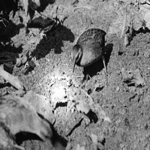
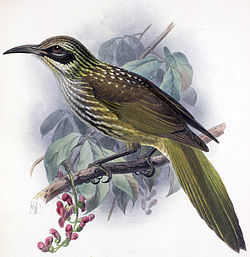
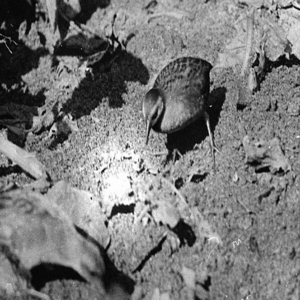
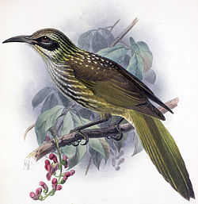

분류

도도새
도도(Dodo)는 마다가스카르 동쪽의 모리셔스 섬에 생식했던 현재는 멸종한 조류이다. 도도과에 속하는 새는 로드리게스 도도 등 1종류가 더 있는데(현재는 모두 멸종되었으며, 박제도 남아있지 않다), 대체로 도도(새)라고 하면 모리셔스 섬의 도도를 지칭한다. 흰색 도도는 레위니옹섬 근처에 존재하는 것으로 잘못 알려진 적이 있었다.
도도의 반화석은 도도의 몸길이가 약 1미터(3.3feet), 몸무게는 약 10.6~21.1킬로그램 정도였을 것이라고 나타내준다. 도도의 생활 모습은 오직 17세기 그림,회화,서적 등에서만 볼 수 있다. 묘사된 모습들이 매우 다양하고, 몇 개의 그림들만 살아있는 도도의 모습을 정확히 그렸기 때문에 도도의 생활 모습은 밝혀지지 않았다. 또한, 도도의 서식지와 행동에 대해서도 정확히 아는 부분은 적다.[2] 회색과 갈색을 섞은 깃털, 노란색의 발, 회색 머리, 검은색,노란색과 초록색의 부리를 가지고 있다고 묘사된다. 위결석을 이용해 과일과 같은 음식을 쉽게 소화할 수 있었고, 주 서식지는 모리셔스의 해안가로 추정된다. 도도는 날지 못하는 새로, 날개가 퇴화하여 몸체에 비해 매우 작아 날 수 없었다. 날개가 퇴화한 이유는 도도새가 살던 땅에는 도도새를 위협할 만한 맹수가 없었기 때문이다. 그래서 도도새는 포식자가 살지 않는 서식지의 특성에 맞게 새들에게 가장 튼튼한 생존 수단인 날개를 포기한 것이다. 도도새는 날개를 포기한 대신 튼튼한 다리와 구부러진 부리로 철저히 땅 위의 생활에 적응하였다. 초식성으로 과실 등을 주식으로 했다. 9월이 번식기로, 땅 위에 둥지를 지었다.
이 새는 대항해 시대인 1507년 포르투갈인들이 마스카린 제도에서 발견했다. 1598년 네덜란드의 항해사에 의해 첫 번째로 묘사되었다. 사람들이 관심을 가지기 시작한 것은 이상한 나라의 앨리스에서 도도가 나왔을 때 부터이다. 그 당시 도도는 인간, 가축들에 의해 무자비로 포획당했었다. 마스카린 제도가 기항지로 이용된 이후부터 도도는 하늘을 날거나 재빨리 움직이는 것조차 불가능하게 되었고 17세기 초반 네덜란드인 이주자들에 의해 볼거리로 포획되어, 1681년 영국인 벤자민 해리가 목격한 것을 마지막으로 그 모습을 감추었다. 인간의 남획 등으로 발견된 지 180년 만에 완전히 멸종된 사실에서, 동물을 멸종으로 몰아넣은 인간의 잔인한 행동에 대한 이야기를 다룰 때 언급된다.

큰바다 쇠오리
큰바다쇠오리는 고기나 알을 식용으로 쓰기 위해, 또는 깃털이나 지방(脂肪)을 채취하기 위해서 적어도 8세기 무렵부터 포획되었다. 소빙기(小氷期) 때문에 개체수 감소가 있었다고도 여겨지지만, 그 후의 대규모 남획에 의해서 수백만 마리였다고 여겨지는 큰바다쇠오리는 금세 수가 줄어들게 된다. 이 새는 인간에 대한 공포심이 없고, 오히려 호기심을 가지고 인간에게 접근해 와 살해당했다고 한다. 또, 1년에 1개밖에 산란하지 않아 번식력이 낮았던 것도 멸종으로 연결되었다고 여겨지고 있다.
1534년 프랑스의 탐험가 자크 카르티에의 탐험대가 뉴펀들랜드에 상륙한 이래 큰바다쇠오리는 탐험가들에 의해 많은 수가 사냥되었다. 사냥은 뉴펀들랜드뿐만 아니라 각지의 해안에서 무자비하게 이루어졌다. 1750년 무렵에는 북대서양에 거의 번식지가 남지 않게 되었지만, 그런데도 남획이 계속되었다.
1820년 무렵에 번식지는 아이슬란드 앞바다의 가이르풀라스케어 섬에만 남게 되었다. 설상가상으로 1830년에 그 작은 섬이 분화(噴火)해 지진과 함께 바다에 가라앉았다. 이 재해에서 살아남은 50여 마리가 가까이의 엘데이(Eldey)라고 하는 암초로 옮겼다. 멸종 직전이었지만 오히려 표본에 희소가치가 붙어 수집가나 박물관에 고가(高價)로 팔리게 되어, 남은 큰바다쇠오리도 차례차례로 사냥되었다.
결국 1844년 6월 3일(또는 6월 4일)에, 엘데이 섬에서 마지막으로 확인된 살아 있는 큰바다쇠오리는 포란(胞卵)중의 한 쌍이었지만, 발견과 동시에 발견자에게 박제로 만들어지기 위하여 살해당하고 알은 발견자가 발로 내리쳐 부수었다. 그 후에도 여러 차례의 목격 증언도 있었지만, 현재는 80개의 박제와 70개 남짓의 알 껍질만이 남아 있다. 큰바다쇠오리는 동물에 대한 인간의 무심함과 생물 다양성의 중요성을 일깨워주고 있다.
여행비둘기
18세기에는 북아메리카 전 지역에서 50억 마리가 서식했다고 추정되며, 최대 1조 마리까지 추산하는 경우도 있어 세계에서 수가 가장 많은 새였다고도 한다. 하지만 19세기에 이르러 흑인, 빈곤층, 노예들에게 주기 위한 식용으로 또는 사료와 깃털의 채취를 위해서 남획이 이루어져 수가 격감했다. 당시 자본가들은 여행비둘기를 돈벌이수단으로 여겨 여행비둘기 고기를 기차로 수송하는 운송업을 하기도 했다. 그러나 막대한 개체수 때문에 멸종하지 않을 것이라는 사람의 무지 때문에 여행비둘기의 보호는 진지하게 검토되지 않았다. 게다가 여행비둘기의 고기는 매우 맛있었다고 전해져서, 총이나 새그물, 막대기를 사용해 많은 사람들이 포획을 실시했으며, 비둘기 사냥은 미 서부에서의 금 채취, 곡식 투기 등으로 벼락부자가 된 졸부에 있어서는 일종의 '스포츠'였다. 그래서 여행비둘기의 포획을 전문으로 하는 사냥꾼에 의해 조직적이고 대규모에 걸친 대량학살이 이루어졌다. 심지어는 3만마리를 사냥대회에서 이기려고 죽인 사냥꾼도 있었다고 한다. 미국의 졸부들과 사냥꾼들은 여행비둘기를 생명을 가진 동물로서 존중하는 것이 아니라 [놀이]를 위한 장난감으로 여겼던 것이다.
여행비둘기는 1870년대에 조금씩 줄어들었지만 여전히 많은 무리를 지어 살았다. 그러나 1890년대에 들어오면서 여행비둘기의 모습은 사냥꾼들이 통신을 이용하여 정보를 주고받아서 여행비둘기를 사냥했기 때문에 거의 볼 수 없게 되어, 겨우 법으로써 보호가 시도되었지만, 이미 때가 늦었다. 여행비둘기는 작은 집단에서는 번식할 수 없는 습성이 있는데다가, 한번 번식하였을 때 겨우 1개의 알만 낳을 뿐이었다. 그래서 일단 크게 줄어든 개체수를 회복하는 것은 곤란했다. 산림이 농업을 위해 없어지면서 여행비둘기들이 살곳과 먹을거리인 도토리, 밤, 블루베리따위를 잃었다는 사실도 여행비둘기의 멸종이유였다.
1906년에 사냥된 것을 마지막으로, 야생의 개체는 종적을 감추었다. 그리고 1914년 9월 1일 오하이오 주의 신시내티 동물원에서 사육되고 있던 마지막 한 마리인 마사(Martha, 조지 워싱턴의 아내 마사의 이름을 땄다)가 죽으면서 여행비둘기는 완전히 멸종했다. 마사의 표본은 현재 스미소니언 박물관에 있다.
캐롤라이나앵무
유럽에서 온 사람들은 캐롤라이나 앵무들이 과수원의 과일을 훼손한다는 이유로 사냥당했다. 게다가 그들의 특성인 동료가 공격당하면 (동료를 보호하기 위해) 동료에게 몰려드는 습성이 이들을 멸종의 나락으로 내몰았다(물론 이 전략은 인류가 도래하기 이전에 진화한 습성이다.).
또 한 가지 요인이 관련돼 있을 것으로 추측하는 것이 외래종이다. 유럽인들이 양봉을 위해 꿀벌을 데려온 것이다. 북미에 있던 유럽인의 벌들과 토착 벌들과는 다르지만, 브라질에서는 아프리카산 벌들이 나무구멍을 차지하고 접근하는 앵무새등의 경쟁자들을 침으로 쏘아죽이는 일이 발생한다. 그와 마찬가지로 야생으로 탈출한 벌들이 나무구멍을 점령하여 경쟁자(캐롤라이나앵무, 딱따구리 등)들을 몰아내었다.
사람들의 개발과 사냥으로 1913년 플로리다의 오키초비 카운티에서의 기록을 마지막으로 야생에서 사라졌다.마지막 캐롤라이나 앵무는 암컷 제인과 수컷 잉카였다. 이들은 신시내티 동물원(여행비둘기 마사가 죽었던 곳.)에서 사육되었다. 1914년 암컷 제인이 죽고 1918년 2월에 수컷 잉카가 죽음으로써 캐롤라이나앵무는 멸종했다.
1920년대와 1930년대에 플로리다의 오키초비호 일대(오키초비 카운티)에서 이 사라진 앵무를 목격했다는 이야기가 나돌았지만, 끝내는 다시 발견되지 않았다. 앞에서도 말했듯이 마지막으로 캐롤라이나 앵무가 생포된 것은 1913년, 더 정확히 1913년 12월 4일의 플로리다에서의 기록이었고, 이 종에 대한 소식은 더이상 없었다. 현재 북아메리카는 살아있는 토착 앵무새를 볼 수 없는 황량한 땅이 되어버렸다(외래종 앵무새 일부는 뉴욕의 샌트럴 파크에서 군락을 이룰 만큼 번성하고 있다). 현재 전 세계 박물관에 7백여 점의 표본이 남아있다.
과달루페카라카라
과달루페카라카라(Guadalupe Caracara, 학명: Caracara lutosa)는 멕시코 연안에 서식했던 작은 맹금류였다. 그러나 그 섬의 원주민들은 이 새를 매우 부정적으로 여겨 총으로 쏘아 죽이는 것이 예사이며 1900년 12월 1일, 채집가 롤로 벡이 과달루페 섬에 원정을 가다가 우연히 11마리의 새를 보고 그 중 9마리를 잡아다가 솜씨좋게 표본을 만들었는데 그게 바로 과달루페카라카라의 마지막이었다. 그 후 몇몇의 목격담이 있었으나 찾지 못하고 결국 지구상에서 영원히 사라졌다.
분홍머리오리
몸길이 41~43cm이다. 몸은 짙은 회갈색이다. 목덜미와 머리가 분홍색인 것이 특징이다. 수컷의 목덜미와 머리는 선명한 분홍색이며 암컷은 옅은 분홍색을 띤다. 날개 가장자리의 깃털은 흰색이다. 분홍색 부리와 붉은빛 도는 검은색 다리와 발을 지닌 수컷과는 달리 암컷과 어린새들은 좀 색이 흐리다. 비행 중의 분홍머리는 커다란 몸집, 넓은 날개, 길다란 목 그리고 짧은 꼬리의 색들이 어우러져 장관을 보인다. 텃새이며 단독 생활 혹은 한 쌍이 함께 생활한다. 수영하는 동안에 물장난을 치듯 먹이를 잡곤 했지만 이따금씩 잠수하여 잡기도 한다. 19세기말 영국에서 온 호랑이 사냥꾼들이 분홍머리오리의 아름다움에 매료되어 무차별적으로 사냥하기 시작했다. 20세기 초반, 이들의 숫자는 점차 줄어들었고, 1924년 야생종이 멸종했다. 살아남은 일부는 영국의 한 동물원에 있었다고 한다. 하지만 그 동물원은 오히려 번식보단 관광 목적으로만 다스렸고 결국 남은 녀석들도 멸종했다. 멸종년도는 1936년이라고도 하고 1942년이라고 하는 쪽이 있다.
모아새
멸종의 주범은 유럽 이주민이 아니라 그보다 수백 년 전에 상륙한 마오리족으로 추정된다. 마오리족이 모아를 잡아먹은것도 있지만 특히 마오리족이 뉴질랜드에 정착하면서 같이 들여보낸 돼지가 모아의 알을 깨먹었기 때문에 개체수가 급속히 줄었고 오래지 않아 사라졌던걸로 추정. 사실 모아라는 이름 자체가 마오리족의 전설에서 나온 것이다. 그리고 모아를 잡아먹은 흔적이 마오리족의 유적지에서 가끔 발견된다.
13세기 후반 마오리족이 처음 뉴질랜드에 발을 들인 이래 수세기가 지나면서 7종의 모아 아종이 절멸되었고 비교적 크기가 작고 오지에 서식하는 고원모아(Upland Moa, Megalapteryx didinus)만이 16세기까지 생존했으나 끝내 멸종되었다. 최소 16세기까지는 생존했었다는게 밝혀졌을뿐 정확한 멸종시기는 알려져 있지않다. 19세기 초까지 일부 개체가 살아있었을지도 "모른다"는 설은 있다.
맨위 상단의 picture에서 모아를 덮치고 있는 거대한 맹금류는 하스트 독수리(Haast Eagle, Harpagornis moorei)라는 대형 수리로 강한 경쟁자가 없는 환경에서 모아를 주식으로 삼으며 번성했다가 마오리족에 의해 모아가 사라지고 서식지가 파괴되면서 16세기 초 멸종의 길을 걸었다. 모아가 사라진 직후에는 모아 대신 마오리족을 잡아먹기도 했다고 하며, 실제 마오리족의 전설에는 아이를 낚아채가는 거대한 독수리의 이야기가 나온다. 물론 백인들은 하스트 독수리의 화석이 정말로 발견되기 전에는 그게 다 마오리족의 뻥인줄 알았다
하스트독수리
하스트수리(Haast's eagle)는 아르젠타비스를 제외한 가장 큰 맹금류였으며, 주요 먹이였던 모아와 함께 뉴질랜드에서 살았으나 마오리족이 정착한 뒤, 먹잇감인 모아가 마오리족에게 사냥당하고 끝내 멸종하면서 하스트독수리도 16세기 초에 멸종했다. 그렇지만 모아가 18~19세기까지 남아있었다는 주장도 있으니, 그 주장대로면 하스트독수리도 그때까지 멸종하지 않았던 것일 수도 있다
킹섬에뮤
킹섬에뮤(Dromaius ater)는 오스트레일리아에 있는 킹 섬에 서식하던 대형조류이자 날지 못하는 새로 몸색깔은 캥거루 섬에 살던 에뮤와 비슷한 검은색, 어두운 회색, 포도색 이며 현생종 에뮤의 근연종이자 가까운 친척동물로 알려져 있다. 하지만 정착자들에 의한 떼죽음과 남획이 시작되자 개체수가 급감했으며 자취를 감춘 뒤 목격했다는 몇몇 사람들의 증언이 오지만 진위는 밝혀지지 않고 있다. 그림과 골격 박제는 전 세계 어딘가에 보존되고 있는 것으로 추정된다.
웃는올빼미
웃는올빼미는 웃는올빼미속(Sceloglaux)에 속하는 멸종한 올빼미이다. 서식지는 뉴질랜드였으며, 그도 역시 여행비둘기와 비슷한 시기에 멸종했다. 웃는올빼미는 뉴질랜드웃는올빼미라고도 부른다.
레이산뜸부기
레이산뜸부기는 날지 못하는 새로, 하와이 제도에 서식하였으며, 인간에 대한 두려움이 없었다고 한다.날지는 못했지만, 민첩성과 운동신경이 매우 뛰어났고, 200km의 속도로 달릴수 있었던, 치타보다도 더 빠른 동물이었다고 한다. 남획과 서식지파괴로 인해 멸종하였다.
키오에아
키오에아는 멸종한 조류이다. 하와이 섬에 서식했으며, 과일이나 야채, 애벌레 등을 주로 먹었다고 한다. 남획과, 외래종, 서식지 파괴 등의 이유로 멸종했다.
 


